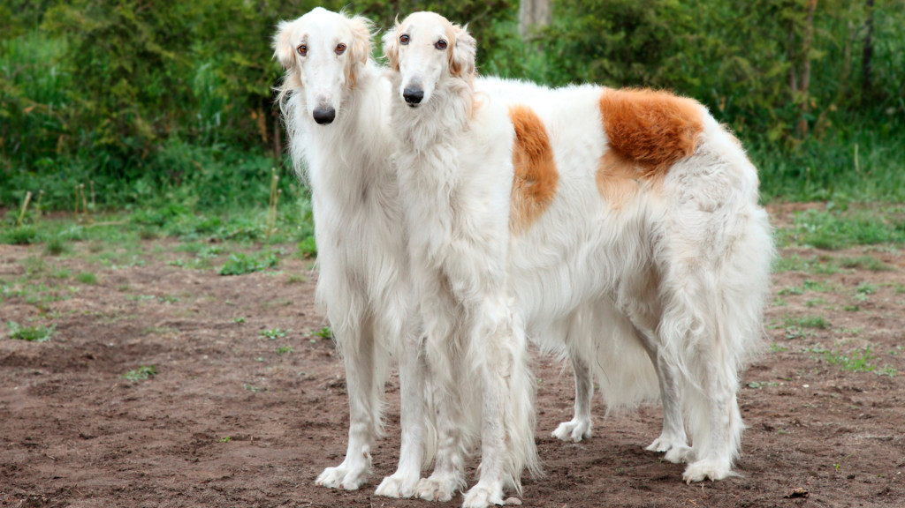

About Borzoi Dogs
Borzoi dogs are in all honesty, my dream dog. Long snouts, elegant and luxurious fur, long legs, and inquiring eyes. Also known as the Russian Wolfhound, these dogs were originally working dogs, helping hunters track down prey. They are large, imposing dogs, with a comical looking head and expression.
Two Borzoi dogs loving and living life, like they should.
Borzoi Features
- Long snoots
- Long gait
- Elegant and luxurious look
- Keen hunters and excellent pets
Borzoi Sources and links
Borzoi's are a beautiful dog but they need plenty of speciality care as they are a hunting dog bred for a specific purpose. Take a look below for some resources for borzoi dogs.